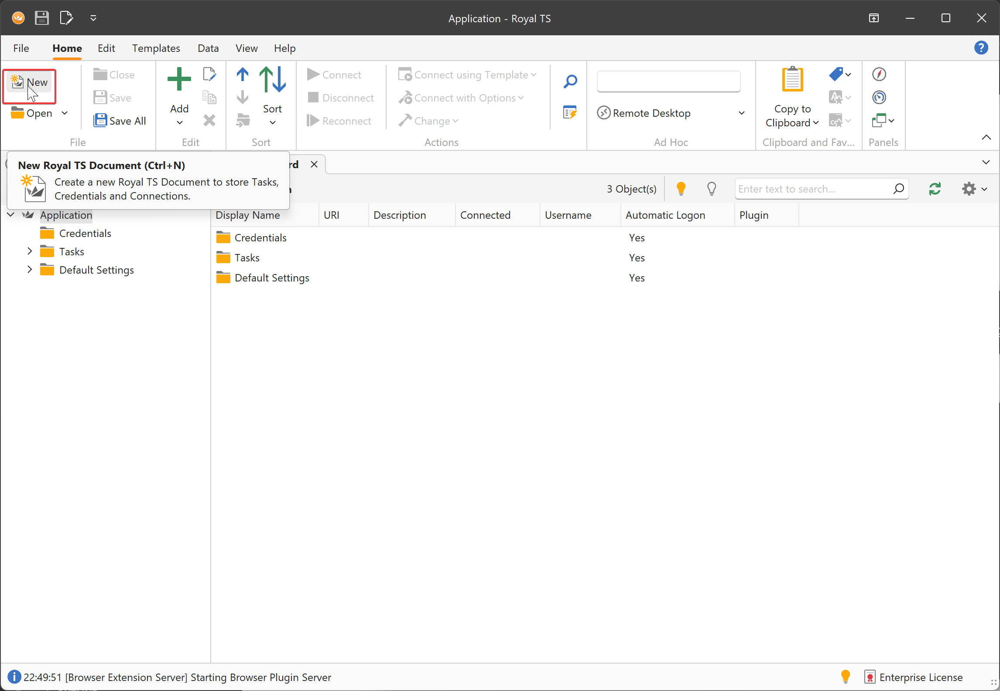
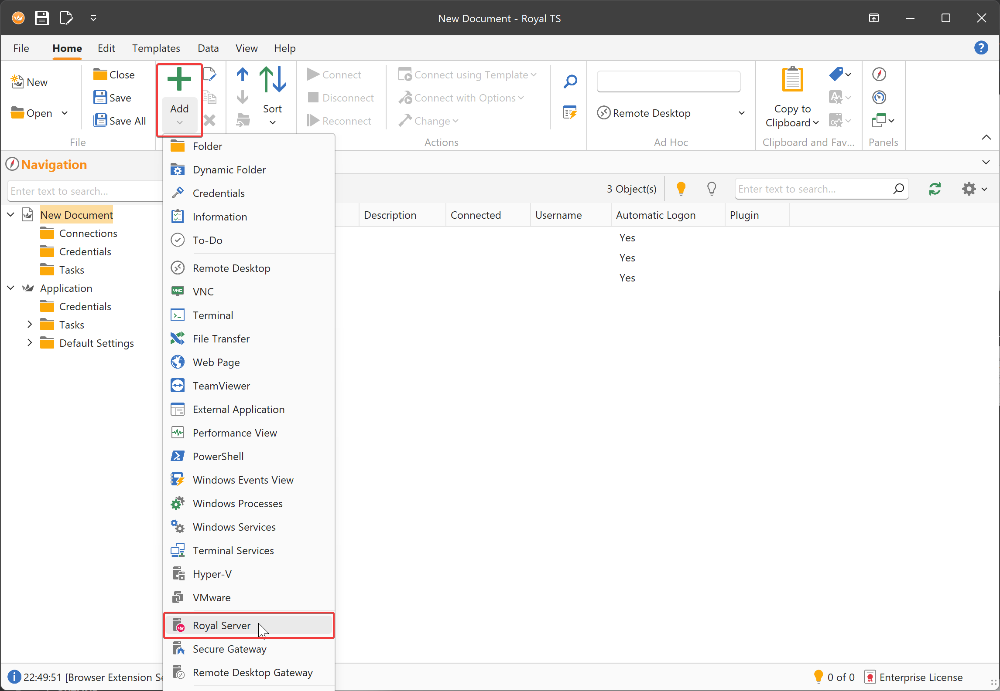

Example: Using The Secure Gateway for a Terminal Connection
Setup of Royal Server
Royal Server needs to be running, make note of the Primary Server Binding (the IP and Port Royal Server is using), we will use this later on.
Setup of Royal TS
In order to use Royal Server from Royal TS/X, first you need to createa a new document.
Note
The steps outlined here are very similar to our Royal TSX product for macOS.
If you have not done yet, create a new document.

Note
The application document is a special kind of document, stores important application settings (Options) and also features some out-of-the-box command tasks. You cannot add connections directly to the application document. Create your own document(s) to store connections.
Specify a name and save the document.

Then, click Add and Royal Server

Specify a Display Name and a Computer Name (which is the DNS name or IP of Royal Server)

Using credentials for Royal Server The Royal Server object supports both HTTPs (specify "Royal Server Credentials") and SSH tunnel access (specify "Secure Gateway Credentials") of Royal Server.
For this tutorial, are going to specify Royal Server Credentials:

These credentials are used to authenticate against Royal Server and the account needs to be a member of the "Royal Server Users" group for management connections and in he "Royal Server Gateway Users" group for Secure Gateway connections to get access.
Note
The Secure Gateway can be used in the same way with either a Royal Server object or a Secure Gateway object.
Now we add a new Terminal Connection:

Specify a Display Name and a Computer Name (the DNS name or IP address of the server you want to manage processes on).

Specify the credentials to connect to and manage Windows processes. These credentials will be used to authenticate against the managed server, where the processes are listed.

Note
You don't need to specify passwords directly. There are more flexible ways to specify a credential.
Next, specify the Royal Server to be used as a Secure Gateway for this Terminal connection.

Note
When specifying a Royal Server object, the Terminal connection does not connect directly to the host specified in Computer Name. Instead, it first establishes an SSH tunnel to the Royal Server host and then uses that tunnel to connect to the specified Computer Name host.
Note
When connecting for the first time, you may see a warning prompting you to verify the Royal Server by its fingerprint.
 The correct fingerprint can be found under General → Certificate Store in the Certificate Hash column for the selected certificate.
Once saved, future connections will not prompt for this verification again.
The correct fingerprint can be found under General → Certificate Store in the Certificate Hash column for the selected certificate.
Once saved, future connections will not prompt for this verification again.

Having an open connection, you can monitor it in the Configuration Tool: